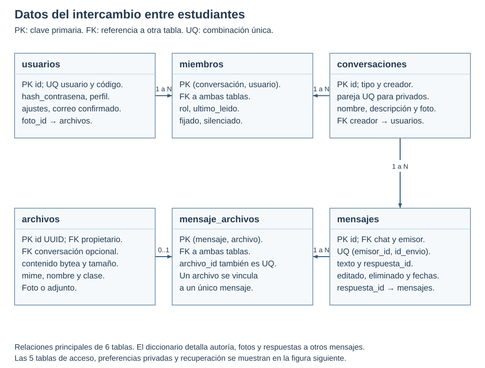
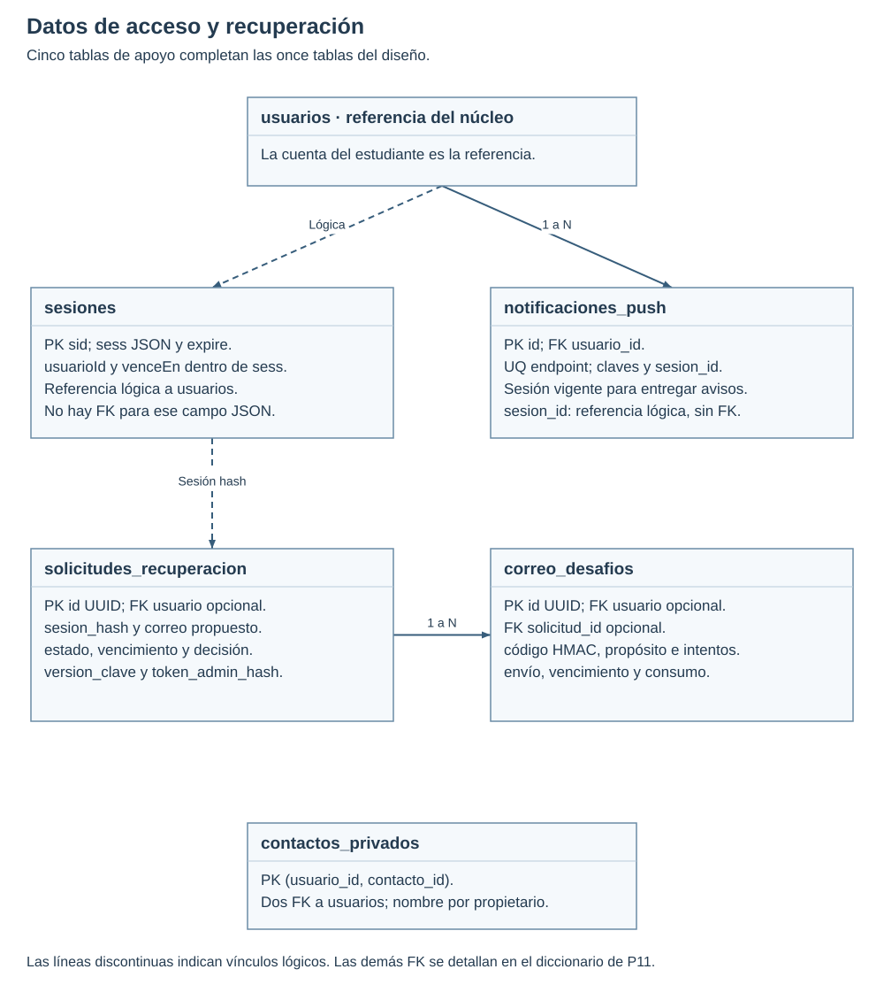

Paso 11 de 12 · Modelo de datos
La información que se conserva
Qué se guarda para volver a consultar las conversaciones.
Qué información se conserva
El modelo conserva la identidad de los estudiantes y el contexto de su intercomunicación: conversaciones, participantes, mensajes y materiales. Separa esos datos de las sesiones temporales y de los permisos de recuperación.
| Tabla | Campos y finalidad |
|---|---|
| usuarios | id, nombre_completo, codigo_estudiante y nombre_usuario únicos; hash_contrasena, descripcion, foto_id, ajustes JSON, ultima_actividad, correo_recuperacion y correo_confirmado_en. |
| conversaciones | id, tipo, nombre, descripcion, pareja única para chats privados, creador_id, foto_id y fecha_creacion. |
| miembros | PK compuesta por conversacion_id y usuario_id. Guarda rol, ultimo_leido, fijado, silenciado y fecha_ingreso. |
| mensajes | id, conversacion_id, emisor_id, id_envio UUID, texto, respuesta_id, fecha_hora, editado, eliminado y actualizado_en. |
| archivos | id UUID, usuario_id, conversacion_id opcional, nombre, mime, contenido bytea, tamano, clase y fecha. |
| mensaje_archivos | PK mensaje_id y archivo_id; archivo_id además es único para impedir vincular el mismo binario a dos mensajes. |
| sesiones | sid, sess JSON y expire. El JSON contiene identidad, vencimiento y estado temporal de los flujos de acceso. |
| notificaciones_push | id, usuario_id, sesion_id, endpoint único, p256dh, auth y actualizado_en. |
| contactos_privados | PK usuario_id y contacto_id; nombre privado para esa pareja propietario/contacto. |
| solicitudes_recuperacion | id, usuario_id opcional, sesion_hash, correo, version_clave, token_admin_hash, estado y fechas de creación, vencimiento y decisión. |
| correo_desafios | id, usuario_id y solicitud_id opcionales, sesion_hash, correo, proposito, version_clave, codigo_hash, intentos y fechas de creación, envío, vencimiento y consumo. |
Relaciones del intercambio


Ampliar diagramaUn usuario puede participar en varias conversaciones. Cada mensaje tiene un chat y un autor; una respuesta referencia otro mensaje. El servidor exige que la respuesta y los adjuntos pertenezcan al mismo chat. Las fotos de usuarios y conversaciones también referencian archivos; su conversacion_id puede ser nulo.
Relaciones de acceso y recuperación


Ampliar diagramacontactos_privados tiene dos claves foráneas a usuarios: una para el propietario y otra para el compañero. Las tablas de recuperación pueden tener usuario nulo; no debe interpretarse una solicitud por sí sola como una cuenta acreditada. correo_desafios puede enlazar una solicitud de recuperación.
Integridad e índices
UNIQUE(emisor_id, id_envio)impide dos registros para el mismo intento;parejaevita duplicar un chat privado. La API construye la pareja con los identificadores ordenados.PRIMARY KEY(conversacion_id, usuario_id)evita pertenencias duplicadas. La administración del grupo bloquea la conversación para coordinar cambios simultáneos.- El índice de mensajes por conversación e ID sirve al historial; el de conversación y actualización sirve a los cambios. Miembros se indexa por usuario y conversación.
- Los desafíos se indexan por cuenta, correo y hash de sesión para comprobar cuotas y vencimientos. Las sesiones se indexan por vencimiento y por la identidad del JSON.
Conservación y privacidad
Cerrar una sesión no borra el historial. Eliminar un mensaje vacía su texto y activa la marca de eliminación; no equivale a un borrado físico de todos los archivos. Las subidas almacenadas siguen contando para la cuota. Quitar a un miembro corta su acceso; si se le añade de nuevo, podrá consultar el historial de ese grupo.
La contraseña se representa mediante un hash Argon2id; los códigos y permisos tienen vencimiento y consumo. Correos, hashes, códigos, secretos de push y nombres privados no forman parte del perfil público de un compañero.
Documentos y modelos
Consultar la documentación completa en PDF. Esta página y el documento del paso describen el mismo diseño del sistema.